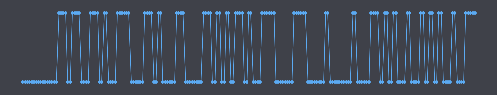
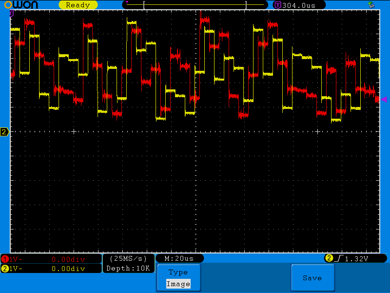

How it Works
Z1FFER 0.3.x and higher use thermal noise in a Modular Entropy Multiplier architecture. It was first invented by Peter Allan and later reinvented by Bill Cox. Z1FFER's circuit follows very closely to Bill's design. I'll take my own stab at explaining how it works, as well as link to their explanations.
The MEM architecture takes a small thermal noise signal generated by an amplifier and doubles it repeatedly. This causes it to grow exponentially. After it crosses a threshold we add the voltage range and modulate the result – this has a subtractive effect that is repeated until the voltage falls below the threshold where we then resume doubling it. If you can read code, here's a simulation written in Swift:
Note: Instead of doubling we actually multiply by 1.8. As you can see if you run the simulation with a multiplier of 2 the result will get pinned to the rail (the maximum voltage) and not be able to recover.
Here is a visualization of the swift code:
This is the value of `analogValue`
 And This is `binaryOut`
And here is the output from my oscilloscope. Note that the Z1FFER has two outputs, which each take two clock cycles to run, alternating the responsibility of performing the calculation.

If you are looking for more explanation, here is Bill Cox's: Infinite Noise TRNG Here is Peter Allan's original diagram of the architecture from 1999: Firebug And here is his FPGA based implementation: Redoubler